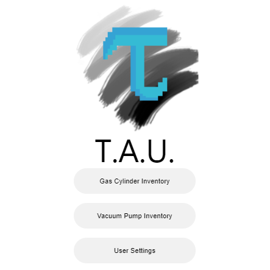

Portfolio


TEMPO Automation Utility
TAU was created to simplify some of the daily tasks during my time at UCSB's Materials Research Lab. The application tracks inventory and maintenance records while automating notifications.
The code relies heavily on DOM manipulation and utilizes cloud functionality. User authentication, serverless functions and data storage are all contained in the Firebase ecosystem.
Features
- DOM manipulation
- User permissions
- CRUD operations